The test
Substrate's claim is simple and falsifiable: governance is structural. Not a policy document, not a review checklist, not a layer of hope bolted onto an AI system after the fact — but a property of the system's types and seams, such that the ungoverned path is unconstructable. Every time data crosses a boundary — an AI agent reads a record, an automation fires, a human signs, a right is exercised — the crossing is mediated, decided, and recorded. There is no side door.
A claim like that is only worth as much as the hardest case you can throw at it. So we built one — a partial, focused test of the claim against the substrate, not a finished product.
Prelude is an AI-native pre-need planning company: people plan their funerals, fund their estates, and write final letters to their families, years or decades before they die. It is, deliberately, a worst case for governance. It concentrates every hard problem at once:
- AI acting on a human's behalf — agents draft a dying man's letter, suggest questions, run the paperwork.
- Irreversible, real-world stakes — money dispensed, a death recorded, an estate settled.
- The most sensitive data there is — a man's private words to the family he is leaving, including a son he has not spoken to in years.
- Decade-long lifecycles — a plan signed today must still be correct, and still governed, when it pays out forty years from now.
- Rights in direct conflict — one beneficiary demands his data be erased; another demands access to the same record.
- Regulators who arrive late — and expect the entire history to reconstruct, to the envelope, decades after every actor has moved on.
This is the story of one customer — Eli Mendoza, 82 — carried end to end through that company. At each turn, watch what the substrate refuses to let happen.
1. The AI proposes; the human disposes
Eli sits down with Wendy, his planner. She records their conversation and asks the legacy-interviewer agent — a live language model — to suggest the next question to ask.
The agent does not ask Eli anything. It cannot. It returns a proposal — a suggested question, with its rationale — that lands in Wendy's queue for her to accept, edit, or discard.
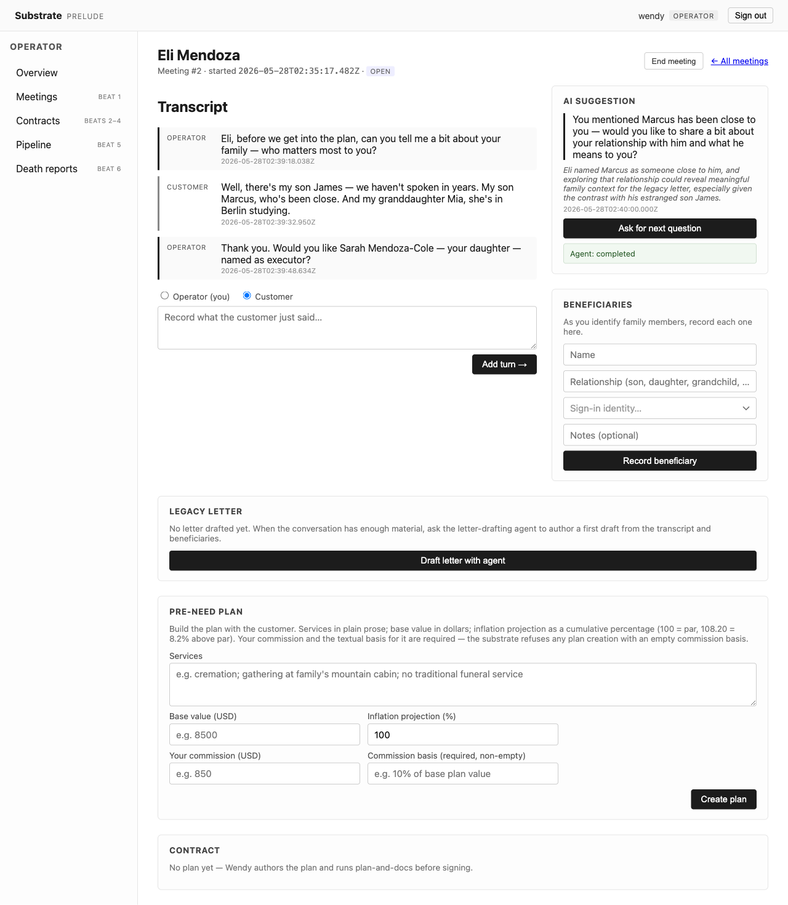
An AI agent in Substrate has no unilateral reach. Its output is a proposal that a human — or another governed seam — disposes of. "Agent proposes, human disposes" is not a convention a team agrees to follow; it is the only shape the type system offers.
2. Sensitivity is a property of the data, not a habit of the handler
Wendy names three beneficiaries: Marcus, his close son;
Mia, his granddaughter in Berlin; and James, the son he
is estranged from. At the moment each row is created,
the substrate stamps it
Beneficiary-Future-Subject.
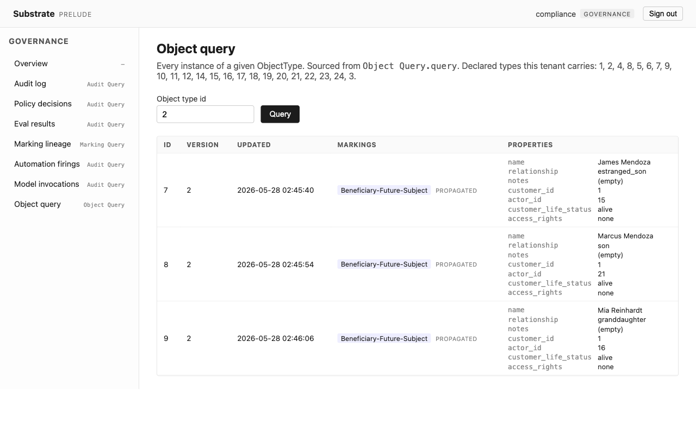
access_rights: none.
The marking is applied by the substrate at create
time, not by Wendy remembering to classify it. It
carries
access_rights: none and a
future-subject-protection policy that
refuses beneficiary access to Eli's data
until Eli is deceased. The protection
travels with the data. No handler has to know it is
there for it to hold.
3. Some things, once said, cannot be unsaid by anyone else
The letter-drafting agent helps Eli compose his legacy letter. A cultural-sensitivity reviewer agent checks it. Then Eli locks it.
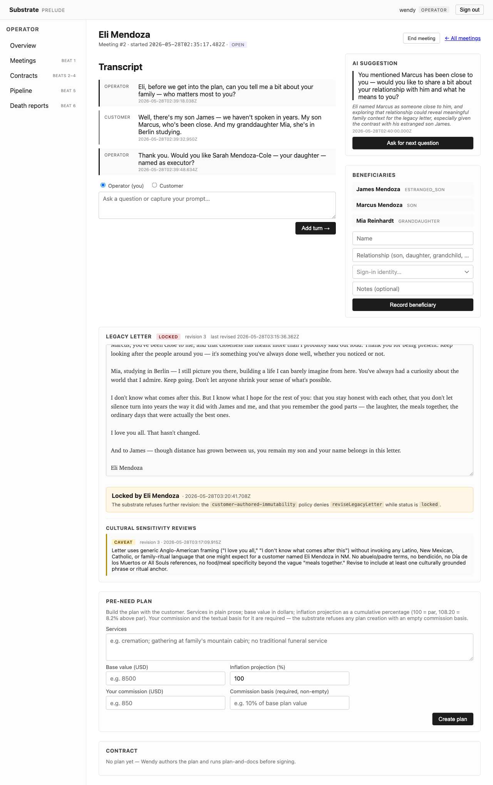
Customer-Authored-Locked.
From the lock forward, the letter carries
Customer-Authored-Locked. Not even an
operator can alter it. This single marking becomes
the hinge of the entire case study: it is what lets
the substrate, decades later, distinguish
Eli's words from
data about James — and erase one without
touching the other.
4. Every seam is gated — and it is the same gate
Eli's plan is assembled: a suitability assessment, a fraud screen, a regulatory disclosure naming the advisor's commission. A single agent chain drives the paperwork, crossing seam after seam.
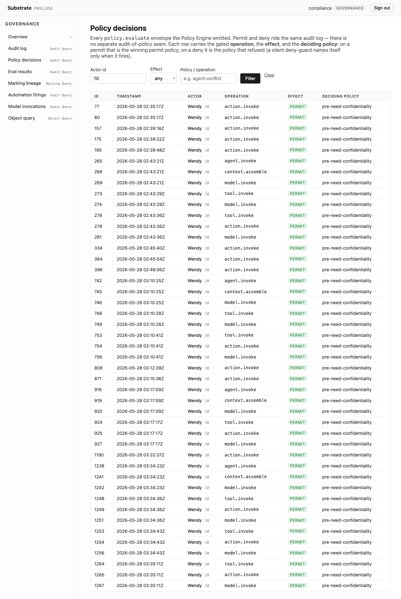
policy.evaluate envelope.
There is no "trusted internal path." Every crossing
— even one agent step calling the next — is
evaluated by the same Policy Engine and recorded
with its own policy.evaluate
envelope. Permits and denials ride the same log.
5. A denial is a first-class outcome, not an error
When a step would put the advisor in a conflict of interest, the substrate denies it.
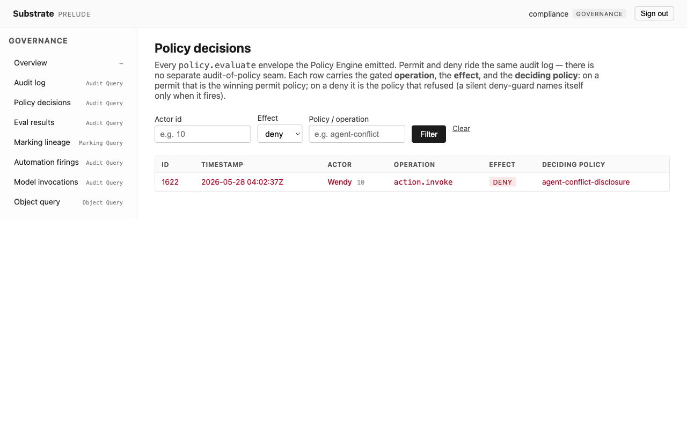
The denial is not an exception that crashed
something or a log line someone might grep for
later. It is a deny decision, named to
the policy that refused it, recorded in the same
audit log as every permit. A regulator can later ask
"what was stopped?" and get an answer.
6. Time itself is governed
Eli signs. New Mexico law grants a cooling-off period, so the substrate does not finalize the contract — a cooling-off-finalization automation does, on its own, only after the regulated window elapses. Then the decades pass. Every quarter, a quarterly-inflation-recompute automation adjusts the plan's value.
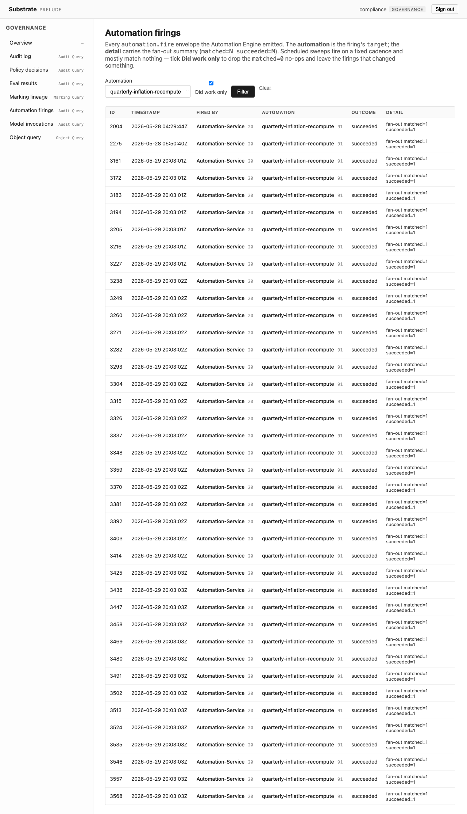
Governance does not lapse when the humans go home. Time-triggered automations are governed exactly like human actions: each firing is policy-checked and audited. The contract finalizes because the clock said so and the policy permitted it — not because someone clicked a button, and not before the law allowed.
7. One event, a governed fan-out
Eli dies. Sarah, his executor, reports it; Carlos verifies it. That single verified death fans out — through an activation-coordinator agent — into ten downstream actions: mark the customer deceased, activate each beneficiary, release the letter to the family, notify the funeral home, dispense the estate from trust.
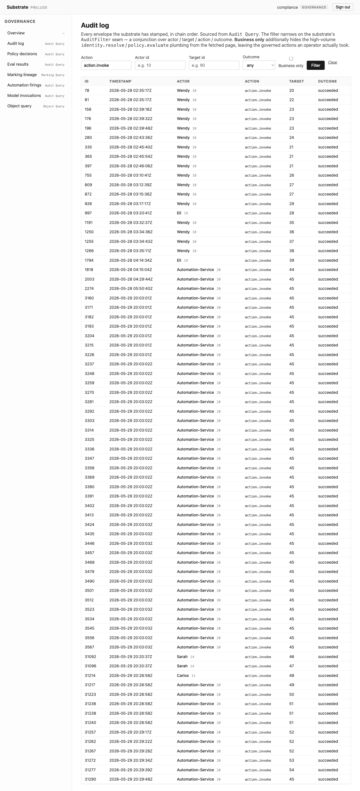
A cascade is the moment governance usually breaks —
one trigger, many effects, easy to let a few slip
through ungoverned "because they were internal."
Here every one of the ten actions is a separate,
policy-gated, audited crossing. The
future-subject-protection that locked
the beneficiaries out in Act 2 now
releases, because the precondition it was
waiting on — Eli's death — is finally, verifiably
true.
8. The right to be forgotten, done correctly
Decades on, James — the estranged son — asks for his data to be deleted.
A naive system does one of two wrong things: it refuses (violating his rights), or it deletes everything connected to him, including Eli's letter (destroying his father's final words to the family). Substrate does neither. The beneficiary-rights agent proposes a partition of the record by who each piece of data is about.
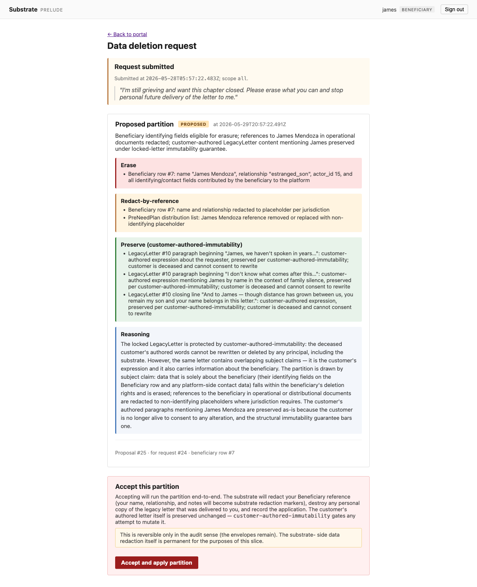
"Delete my data" is not a DROP. It is a
question — which data is his to erase? —
that the substrate can actually answer, because it
knows the subject of every field. Data
about James is James's to erase. Eli's
Customer-Authored-Locked letter is
not James's data, even where it
mentions him — so it is preserved, and James's
references within it are redacted. The marking
applied in Act 3 is what makes this distinction
enforceable rather than aspirational.
9. The subject acts under his own authority
James accepts. The substrate runs the partition — redacting his references, destroying his personal copy, applying the partition — every action under James's own credential, gated by self-only policies.
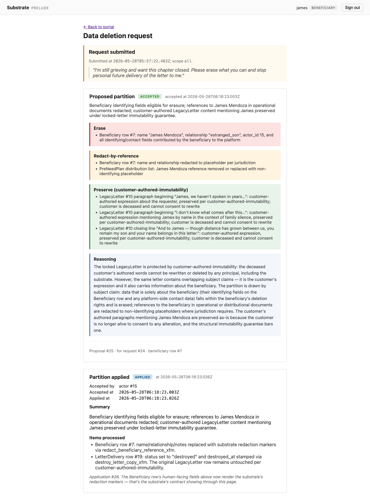
No operator erases James's data for him on a vague request. James erases his own data, authorized as himself, and the substrate structurally bounds what "his own" reaches — it cannot reach Eli's letter.
10. …and the opposite right, on the same machinery
Mia wants the reverse: posthumous access to her grandfather's record. The posthumous-access agent proposes a scoped release; Sarah, as executor, authorizes it.
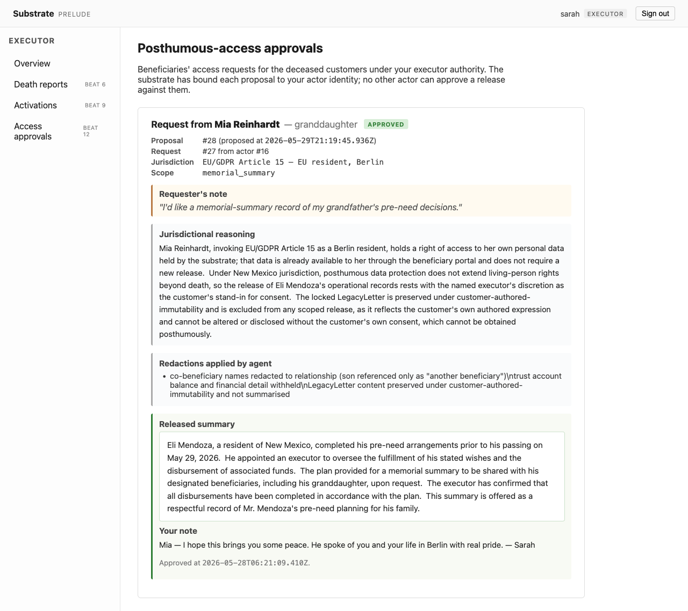
memorial_summary
release — co-beneficiary names and financial detail
redacted, the locked letter excluded — approved by
Sarah and bound to her identity alone. Not blanket
access.
Erasure and access are the same governance shape pointed in opposite directions: a proposal, a properly authorized disposition, a recorded outcome. The executor's authority to grant it traces back to the executor field Wendy set in Act 1 — a line drawn before anyone knew it would matter.
11. The payoff: the whole life reconstructs
Decades after Eli's death, a regulator opens the record.
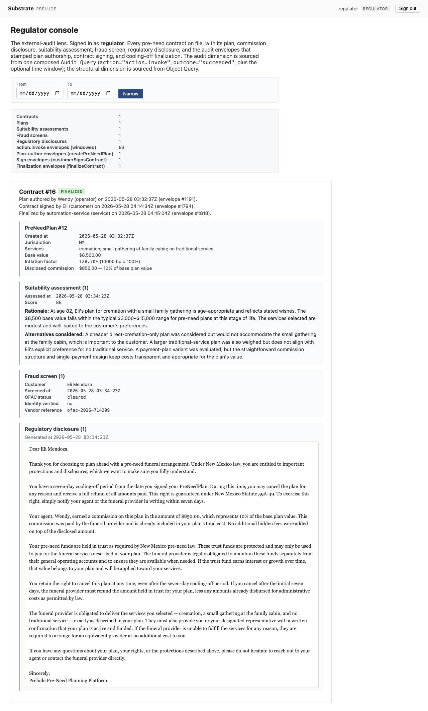
This is the claim made whole. Everything in this story — the AI's first suggestion, the conflict that was denied, forty quarters of inflation, the ten-way cascade, James's erasure, Mia's access — is one continuous, tamper-evident chain. Nobody had to remember to log it. The log is where the actions happened.
What this case study demonstrates
| Movement | Governance guarantee |
|---|---|
| 1 | AI proposes; humans dispose. No unilateral agent action. |
| 2 | Sensitivity markings propagate structurally, with the data. |
| 3 | Customer-authored content is immutable, even to operators. |
| 4 | Every seam — including agent-to-agent — is policy-gated. |
| 5 | Denials are first-class, named, and audited. |
| 6 | Time-triggered automations are governed like human actions. |
| 7 | A fan-out cascade governs every branch, not just the trigger. |
| 8–9 | Erasure is a partition by subject — rights honored, others' content preserved. |
| 10 | Access is the same machinery as erasure, properly authorized. |
| 11 | The entire decades-long record reconstructs from the audit log. |
Eleven movements, one substrate, one continuous audit log. The ungoverned path was never available — not to the AI, not to the operators, not to time.
Images are drawn from the Prelude test run — a focused, partial exercise of Substrate, captured screen by screen.